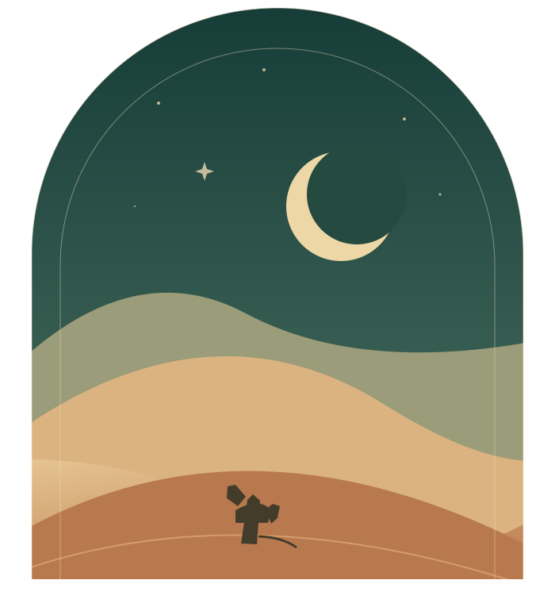

گاش ہاوَن واجِنۍ زِندگی
الرَّحِيقُ الْمَخْتُومُ
سیرتھ ہٕنٛز کتھ۔
پَننہِ زَبانِ منٛز۔
سیرت النبی ﷺ — کٲشُر ترجمہٕ
نبی کریم ﷺ سٕنٛز زِندگی ہٕنٛز کتھ، پَننہِ کٲشرِ زَبانِ منٛز۔
◷ 25 مِنَٹ پَرُنکٲشُرباب ۱

جزیرٕ نما عَرَبیَتہٕ کتھ شروٗع چھےٚ گژھان
✧01باب ۱
زَمیٖن، لوٗکھ، تہٕ شروٗع۔
نبی کریم ﷺ سٕنٛزِ زِندگی ہٕنٛز کتھ پَرنہٕ برونٛہہ، زانِو تِمَن ہٕنٛزِ دُنیاہ کٮ۪ن علاقَن، خاندانَن تہٕ سفرَن بارَس منٛز۔
07حِصّہٕ52ترجمہٕ شُدٕ حِصّہٕ
تھوٚڑٕ پَس مَنظَر
علاقہٕ زانِو۔
یمنہٕ پؠٹھٕ شُمالی علاقَن تام، زانِو اَتھ بابَس منٛز آمٕژَن جایَن بارَس منٛز۔
پَرِو، غور کَرِو، بیٚیہِ پَرِو۔
کٲشُر ترجمہٕ
01
باب ۱
کتھہِ ہُنٛد پَس مَنظَر
SOURCE PAGE 8
✧
یہِ چھُ پوٗرِ بابُک کٲشُر ترجمہٕ، توہہِ ہٕنٛزِ نظرِ ثٲنی خٲطرٕ۔
باب چھُ کھُلان…
“کتھ پَرِو وارٕ وارٕ۔
زِندگی ہُنٛد پیغام تھاوِو یاد۔”